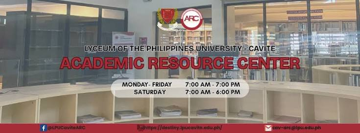

Services
Library Services
Academic Resource Center (ARC)

At the heart of a University that is driven to become a leading institution in the Asia-Pacific region is a fully functional Academic Resource Center, complete with state-of-the-art facilities, the latest computer programs, e-library, and the latest on-line references to assist every student, every faculty member, even non-teaching personnel, in his or her search for knowledge and enlightenment.
The ARC is designed like a modern art gallery that not only provides comfort and silence but also inspires the knowledge-seeker. Fully air-conditioned with internet-connected desktop computers, lounging areas, and a coffee-shop with the best view of the campus grounds, a respite at LPU Cavite’s ARC is one of the highlights of studying at the first and only resort campus in the country.
Admission Steps & Enrollment
Start your journey as a future Lycean. Tap a topic below to expand it.
Admission at a glance
- Pass the Entrance Test (applicable only for programs with Licensure Board Exams)
- Submit the Complete Requirements
- Assessment and Payment of Fees
- Medical Referral Slip at the Clinic
- Order School Uniforms and Books
- School ID and Student Accounts
- Attend Student Orientation
Enrollment requirements: College Freshmen
- Admission Test Result (only for programs with a board exam)
- Two (2) pieces 2×2 colored photos (white background, with name and signature at the back)
- Original report card or Form 138 from the previous school
- Certificate of Good Moral Character
- Photocopy of PSA Birth Certificate
- Signed copy of the LPU Cavite Data Privacy Policy (a printed copy is also available at CPAD)
For convenience, only applicants with COMPLETE requirements will be accepted.
Requirements: Transferees, ALS & Foreign Students
Transferees (also applicable to foreign students)
- Transfer Credentials / Honorable Dismissal
- Transcript of Records from previous school
- Original Certification of Course Description
- Evaluation of Credited Subjects
Alternative Learning System / Non-Formal Graduates
- Certificate of Completion or Diploma
- ALS/NFE Result
Foreign Students
- Two (2) pieces 2×2 colored photos with name tag (white background)
- Photocopy of passport (bio page)
- Alien Certificate of Registration and Student Visa (18 years old and above) / SSP (below 18 years old)
- Authenticated scholastic records (Red Ribbon, with English translation)
Online application steps
- Create your applicant account. Visit the online application portal, click Sign Up and create your account.
- Check your email for your assigned username and password.
- Log in to your applicant account using the username and password sent to your email.
- Complete your applicant profile. Fill out Profile Information, Address Details and Educational Background, review your entries, then click Submit.
- Upload your 2×2 photo. (JHS and SHS applicants do this in Step 8.)
- Complete admission requirements.
- Proceed with enrollment. Once your clearance is approved, do not forget to click “Save” on your application portal, then proceed to LPU Cavite for enlistment and submission of the enrollment requirements.
On-campus enrollment process
For Junior High School, Senior High School, College, Graduate School, Transferees, Foreign Students and ALS completers, proceed to the Communications and Public Affairs Department for enrollment assistance. You will:
- Receive enrollment guidance and instructions
- Have your admission requirements verified
- Be endorsed to the appropriate offices for enrollment processing
- Enlistment and admission processing. Proceed to Room S201 for admission verification and enlistment.
- Student ID and digital accounts. Student Portal activation and official LPU email account setup.
Terms and conditions
All applicants are requested to read carefully and take note of the following for the first semester of academic year 2026–2027:
- Applicants must conform to the online enrollment guidelines and requirements of LPU-Cavite, including schedules and deadlines whenever the school declares them.
- All applications are subject to review and approval upon submission of the necessary requirements.
- Enrollment is official only upon complete and accurate compliance: original/photocopy admission and enrollment requirements must be submitted to LPU-Cavite before the start of classes, and the enrollment procedure must be completed within the same period.
IT Support
Center for Information Technology and Digital Learning
The Center for Information Technology and Digital Learning (ITD) holds the principal responsibility for all ITD-related projects of the University. It is mainly in charge of systems, data, network, and telecommunications administration.
The ITD provides solutions for various transaction processes. It focuses on several aspects of development such as the generation, evaluation and administration of the automated systems being utilized.
ITD also provides extensive services like help-desk support (end user assistance, ID production, validation, network, and telecommunication, etc.) and computer laboratory maintenance.
The ITD office is located on the 2nd Floor of the SHL Building.
Registrar Office
Office of the University Registrar
Tap a topic below to expand it.
About OUR
The Office of the University Registrar is a service unit under the Office of the Vice President for Academic Affairs with the following functions:
- Provides services in the following areas: admission, enrolment, load requirements, scholarships, course adjustments (withdrawal, dropping, changing/adding of courses, overload, substitution), shifting, cross enrolment, transfer, records evaluation and graduation, in accordance with policies of the university and the Commission on Higher Education (CHED).
- Manages the registration of students and processes applications for scholarships/discounts/grants in close coordination with the various colleges, Accounting Office and the Information Communication Technology Department.
- Assists the academic departments in the approval of new programs and revision of curricula.
- Liaises with various government agencies such as the Commission on Higher Education (CHED), Department of Education, Department of Foreign Affairs, Bureau of Immigration, Professional Regulation Commission, and Civil Service Commission.
- Serves as custodian of academic records and is responsible for the proper maintenance, preparation and disposition of such records, ensuring integrity, accuracy and confidentiality.
Documents processed by the Registrar
- Adding of Subjects
- Application for Cross Enrolment
- Application for Overload
- Application for Substitution of Subjects
- Application for Scholarship/Grant
- Application for Sibling Discount
- Certification for the following:
- Candidacy for Graduation
- Course Description
- Eligibility to Take Up Law (CEL)
- Enrolment
- Grade Point Average (GPA)
- Graduation
- Scholarship
- Units Earned, English as Medium of Instruction
- Certified True Copy of Diploma (requesting party should present the original copy)
- Certified True Copy of Form 137/Form 138
- Correction or Change of Name/Date of Place of Birth
- Correction of Grade
- Changing of Subject (for dissolved classes only)
- Completion of Subject
- Diploma
- Dropping of Subjects
- Government Electronics Certification, Authentication and Verification (E-CAV) of Diploma and/or Transcript of Records
- Request for Late Encoding of Grades
- Shifting of Course/Program
- Transcript of Records
- Transfer Credential/Honorable Dismissal
- True Copy of Grades
- Withdrawal of Enrolment
E-CAV instructions
- Submit a request for a Certified True Copy (CTC) of the required academic documents at window 11 (e.g., Transcript of Records, Diploma, Certificate of Graduation, RLE, etc., as applicable).
- Scan the Certified True Copy documents in clear PDF format.
- Create an account through the CHED eCAV Portal.
- Complete the online eCAV application, upload the required PDF documents, submit the application, and follow any additional procedures required by CHED from the eCAV portal.
Ensure that the Certified True Copy is signed by the current University Registrar or the authorized signatory.
Contact information
Office of the University Registrar
Ground Floor (Room 104A)
Lyceum of the Philippines University
Muralla St., Intramuros Manila 1002
- Email: registrar@lpu.edu.ph
- Telefax: 8527-2717
- Trunkline: 8527-8253 to 56 local 116, local 103 (Records Section), local 128 (Admission Section)